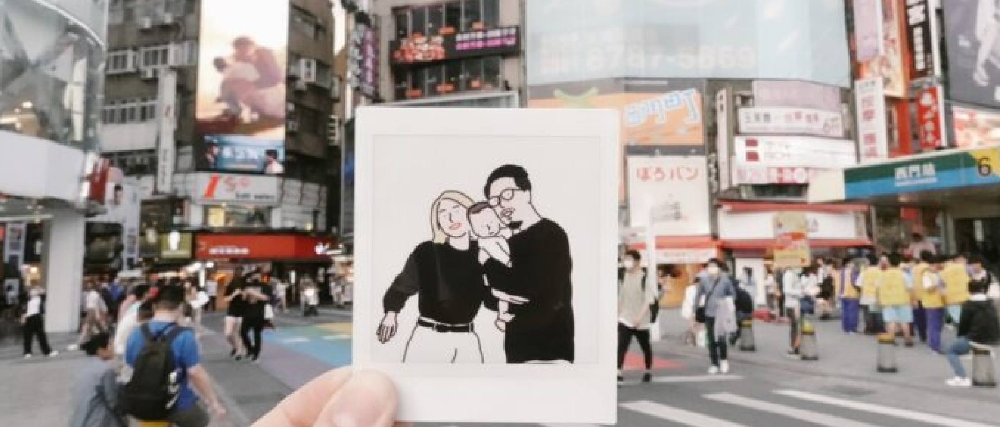

News
高山森林基地 打造

「因為我們先天種植條件不良，人家在高海拔，我們在低海拔，我們就必須靠後天的努力。」語氣輕鬆，第一屆好食好事基金會「食農創生計畫」輔導團隊「國村咖啡莊園」負責人張智閔幽默地道出在八卦山種咖啡的困難與挑戰......
最高海拔只有230m，彰化八卦山原本是一個沒人看好的咖啡產地，配合政府農業政策，彰化市農會設立了咖啡產銷第一班，過去一群種植鳳梨、荔枝,龍眼的農民，捲起袖子，迎接下一場挑戰。沒有優良的生長環境，那就得找到其它生存方式。張智閔的父親，看準了彰化縣擁有全國最長的日照時數，發展獨門的咖啡天然日曬後製作法，使用全天然、無額外銷耗能源的 太陽光來曬自家咖啡豆，這也是品牌名稱「長日咖啡」的由來。
好咖啡沒有捷徑 耗時費工的「蜜處理」
「我們彰化人喔，就是『虯擱儉』（節儉）」張智閔笑著說，19年前，父親就堅持要用陽光來曬咖啡，「就像日曬乾燥的米，煮起來一定是比較香。」這種遵循自然、低耗能的製作流程，對應到今日，其實就是符合「永續」的概念。從逆勢中找到自身優勢，過程並不容易。張智閔的父親跟著產銷班，師事從巴西回來的老師，使用「蜜處理」方式，完整保留咖啡豆的香甜濃郁口感。
「大家都以為我們太陽曬太陽曬，就是日曬法，但其實不是，」張智閔解釋，咖啡製作方法分為蜜處理、日曬法、水洗法等，國村咖啡莊園使用的蜜處理法，需要剝除果肉，只留下內層果膠以及豆子，之後再透過陽光自然曝曬，讓糖分浸透至咖啡豆中，過程耗時又費工。沒有捷徑，靠著一份堅持，找到自家最美的咖啡滋味。張智閔回憶，因為果肉果膠有糖分，容易黏在曬網上，「一開始爸爸也不懂，常常剝到手都流血。」曬乾的過程也是考驗，「太乾會沒有味道，含水率多少都會有差」，張智閔進一步說明，「我們也是慢慢摸索，才找出最適合的方法。」
一杯香醇、濃郁的咖啡，背後是19年來，一家人的努力與付出。張智閔說，21歲那年爸爸決定改種咖啡豆，心中滿是疑惑，「我爸他怎麼能種出咖啡，這咖啡能喝嗎？」最初的嘗試當然不理想，愛喝咖啡的他甚至「喝一口就吐出來了」。從最一開始，一杯40塊錢的咖啡沒有人要，到100元一杯的咖啡，都有老饕慕名而來。「我們這19年來，確實一直在進步。」張智閔說。最新一次的咖啡評鑑高達84.85分，連評審都很訝異：「你們八卦山低海拔，已經可以種到中海拔水準了！」
第一屆好食好事基金會「食農創生計畫」輔導團隊「國村咖啡莊園」負責人張智閔幽默地道出在八卦山種咖啡的困難與挑戰
為獲得父親認可 兄弟倆花了近十年
當咖啡品質逐漸起色，此時卻出現另一個困難，「咖啡做得不錯，為何發展得這麼慢？」過去在海外經商創業十年的張智閔，不懂自家的好咖啡，為何無法擴大發展。2018年，張智閔回到台灣，看見年邁的父親，既要種咖啡、還要包裝、行銷，「根本忙不過來」，他說。於是張智閔與弟弟一起接下了父親的國村咖啡莊園，一個負責產、一個負責銷，決心傳承父親的好滋味。不過，一開始並不是這麼順利。「我弟弟努力了六年，一直到第七年、第八年、第九年都獲得咖啡頭等獎，才獲得爸爸的認可。」張智閔說，當初帶著想做出點改變的心態，遇上世代交替，總是有些摩擦。但隨著兄弟倆的成績越做越好，父親也才將多年心血，放心的交給他們。
弟弟努力提升品質，哥哥張智閔積極拓展業務，從夏天販售「結冰咖啡」大獲好評，到現在不只是「做咖啡」。張智閔與彰化社福機構合作，回收咖啡渣二次循環利用，製成新式的咖啡渣燃材。不但達成永續循環，更提供在地長者、身心障礙者新的工作機會。「以我的個性，做到三年五年一個產業成熟之後，沒什麼挑戰性的時候，就想別的事情來做。」張智閔笑著形容自己，這些經驗、成就感都是張智閔在過去的工作上「完全沒有辦法獲得的。」
長日咖啡，在全台日照時間最充足的地方曝曬，醞釀出最好喝的濃郁口感。國村咖啡莊園，兩代人的故事，如同自家生產的咖啡豆，歷經曝曬、挑戰，糖分浸透到了咖啡豆中，鎖住了咖啡的香甜層次，才形成了今天最美麗的一杯咖啡，喝起來低酸,回甘,香氣足。
關於「好食好事創生食驗計畫」
為輔導長期在地深耕的食農企業走向市場，以振興在地經濟，好食好事基金會今年首季啟動台灣第一個以食農為主題的地方創生計畫「好食好事創生食驗計畫」，並選定中台灣農產基地、台灣農業第三大縣的彰化作為試辦基地。除了提供由50多家團隊中脫穎而出的6家食農業者為期4個月的免費輔導及專業協助，基金會也將持續分享業者背後的故事，期待拋磚引玉帶動農業縣市發展，促成更多青年返鄉，讓老者有所養。